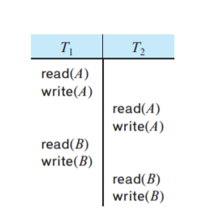
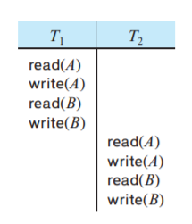
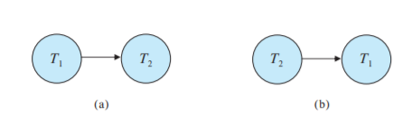
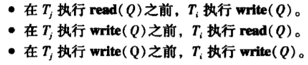

[CMU15445]:并发控制理论
ACID: Atomic
DBMS会保证事务的执行时原子的，即事务要么全部执行，要么全部不执行
有两种方法可以保证原子性：
Shadow Paging
当DBMS需要修改page的时候，就会拷贝一份这些需要被改动的page的副本，然后在这些副本上应用事务进行修改，当事务提交之后，这些修改后的副本就会代替原来的page，该方法的成本很高，因此没有人使用
Logging
DBMS可以对所有的操作进行日志记录，这样就可以很方便的进行回滚，几乎所有的现代数据库系统都在使用日志
ACID: Isolation
数据库提供给事务一种假象，让他们以为当前系统中只有自己一个事务正在运行，他们看不见其他正在并发执行的事务，而这，需要并发协议的帮助
并发协议
并发协议有两种：
悲观
认为事务总是会发生冲突，因此在这些事务执行之前，会首先要求他们获取锁
乐观
任务事务的冲突很少发生，所以一开始不加锁，当它们进行提交的时候，会检查在执行期间是否发生了事务冲突，仅当发生了冲突才会进行处理
冲突可串行化(conflict serializability)
在介绍冲突可串行化之前需要了解一些概念
指令冲突
如果
I和J是由不同事务在相同数据项上执行的操作，并且其中至少有一条指令是write操作，那么我们说I和J是冲突的
上图中，$T_1$的
write(A)指令与$T_2$的read(A)指令就是冲突的冲突等价
如果
I和J是来自不同事务的指令并且他们并不冲突，那么就可以交换他们的次序来产生一个新的调度， 称这两个调度冲突等价
上图中的调度就与之前的调度等价
冲突可串行化
如果调度S和一个串行调度是冲突等价的，那么就称调度S是冲突可串行化的
上面的调度就是冲突可串行化的
还可以使用**优先图(precedence graph)/依赖图(Dependency Graphs)**判断一个调度是否是冲突可串行化的
- 每个顶点是一个事务，当两个事务之间有冲突的指令时，就在两个顶点之间连上一条边

指向的判断根据下面的三条法则确定$T_i$—->$T_j$

- 如果优先图中存在一条$T_i$–>$T_j$的边，那么在等价于S的任何调度S’中，$T_i$都必须出现在$T_j$前面
- 如果关于S的优先图有环，那么调度S是非冲突可串行化的，如果无环，那么S是冲突可串行化的
本博客所有文章除特别声明外，均采用 CC BY-SA 4.0 协议 ，转载请注明出处！